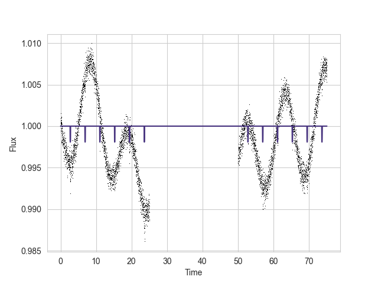
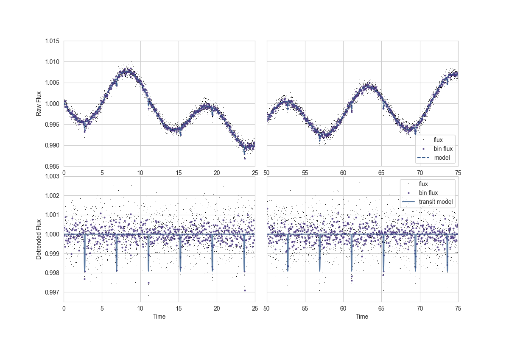
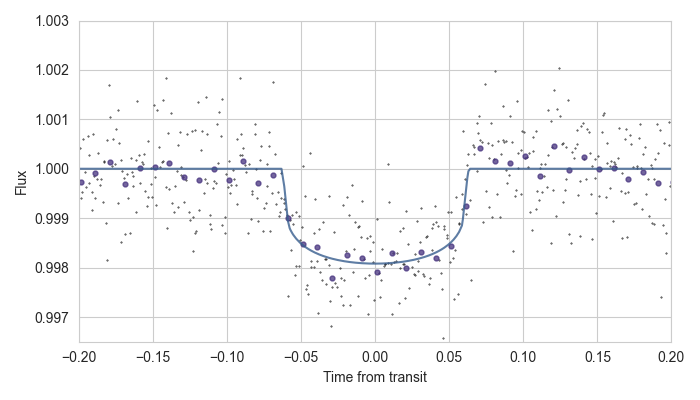

# Structure Start with the _broader research landscape_ and **zoom in** until you are at the focus of the research, then _zoom back out_ at the end. Assume you are presenting to a Masters-level peer _not in this course_. -v- ### 1) Introduction - Context & motive for work (requires some research) - Introduce necessary background information (e.g. the star, the measurements, the theory) - What is your goal/aim for the work -v- ### 2) Methods - What did you do? - What decisions did you have to make (and why - are there statistically justifications?) -v- ### 3) Results - What did you find? - Show the data & the best-fit model - Show the parameters you derived (and their uncertainties) - How well does the model fit (e.g. compared to null hypothesis)? -v- ### 4) Interpretation \& Conclusion - What do those results actually mean? - How do they compare to other results? - Zoom out to the bigger picture (e.g. from planet to system, from your analysis to past/future analyses or observations) --- # Visualisation Plots are **more useful than words** Make sure plots: - Include errorbars/error regions, axis labels, etc. - Emphasise _exactly what you are trying to show_. This may require: - Binning data (this improves signal) - Zoom into important parts - Folding data (e.g. on transit period, stacking in rows, etc) - Disentangling models (e.g. subtract less useful parts of model) -v- ### An "easy" plot (data+model) For photometric data with a transit: <p></p> -v- ### Better plotting: <p></p> <!----> -v- ### Best: <p></p> Try to reformulate the data into a single most useful axis or representation (e.g. folding all transits together by phase) --- # Marking scheme Roughly follow this [MIT guide for technical presentations](https://web.mit.edu/16.412j/www/html/Advanced%20lectures/gdlnsorlpreseval.pdf) - **Objective** clearly set-out and concluded upon - **Intended audience** - correct level - **Evidence** behind all interpreations/conclusions/arguments - **Delivery** - should make sense without slides - **Visulations** - clear & appealing - **Q & A** responses show deeper understanding <!-- | | Delivery | Visulations | Results | Q & A | | ---- | ---- | ---- | ---- | ---- | | *1/6* | Confused | Quickly assembled | Incorrect | Knowledge limited to slides | | *3/6* | Lacking | Sufficient | Mostly consistent | Some broader knowledge | | *6/6* | Confident | Clear & appealing | Research-level | Deep knowledge | | _Fraction:_ | 10% | 20% | 30% | 20% | --> ---